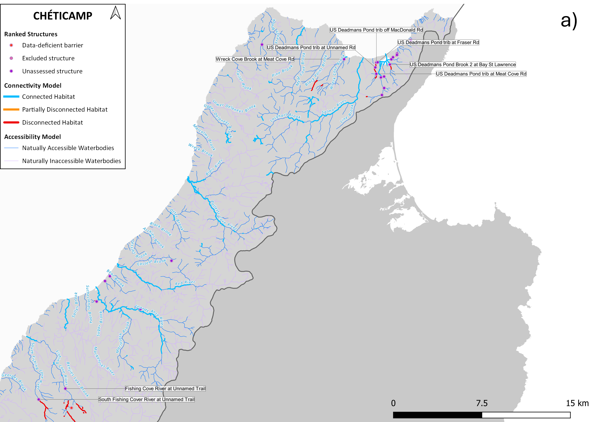
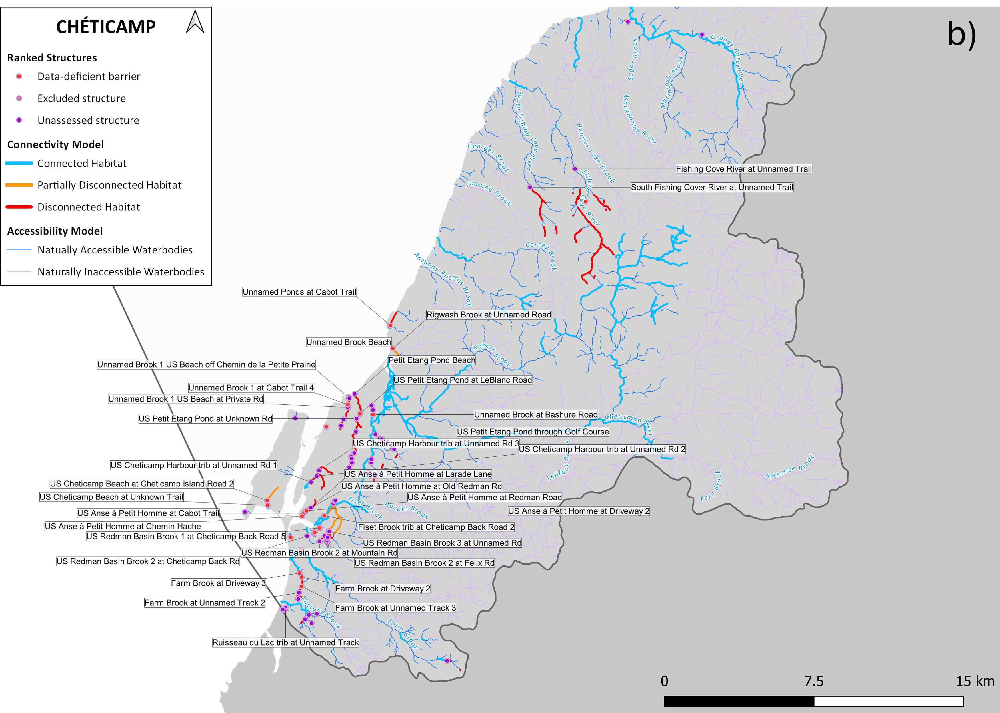

Barrier ID | Site Name | Structure Status | Structure Count Ordered by Model Rank | Average Weighted Habitat Upstream of Structure | Actual Weighted Habitat Upstream of Structure |
|---|---|---|---|---|---|
7483724c-e5ef-46cf-9db3-fee0da2fb1ab | Fishing Cove River at Unnamed Trail | Unassessed Structure | 1 | 9.61 | 9.61 |
3480e530-2f95-4f67-b2e5-0783181f9b53 | Fiset Brook trib at Cheticamp Back Road 2 | Data-deficient barrier | 2 | 12.09 | 12.09 |
45b20998-83ff-4a52-99d0-968f5578d4e8 | South Fishing Cover River at Unnamed Trail | Unassessed Structure | 3 | 15.16 | 15.16 |
57d13cfd-0afa-4387-92ad-93f23ecb9fc1 | Petit Etang Pond Beach | Unassessed Structure | 4 | 16.32 | 16.32 |
2da131b1-4a52-419d-bce4-5380622c3dc3 | US Petit Etang Pond at LeBlanc Road | Data-deficient barrier | 5 | 17.21 | 16.69 |
c27363e9-68ed-46f1-bca3-63a24fa0227d | US Petit Etang Pond at Unknown Rd | Unassessed Structure | 6 | 18.10 | 17.71 |
4ceb436f-c25b-4a58-980b-0278cd2dfc81 | US Petit Etang Pond through Golf Course | Unassessed Structure | 7 | 18.99 | 18.99 |
1adceeb4-a2cc-4176-9b49-8281a26cd732 | US Cheticamp Harbour trib at Unnamed Rd 1 | Unassessed Structure | 8 | 19.84 | 19.42 |
edd8b06b-dfbe-489b-8e4a-f14a9730c4d2 | US Cheticamp Harbour trib at Unnamed Rd 2 | Unassessed Structure | 9 | 20.69 | 20.67 |
3eeee526-8247-497b-845c-db6092014cfa | US Cheticamp Harbour trib at Unnamed Rd 3 | Unassessed Structure | 10 | 21.54 | 21.54 |
bad0302e-cae4-4d36-aa16-3c717e863344 | Wreck Cove Brook at Meat Cove Rd | Unassessed Structure | 11 | 22.86 | 22.86 |
b1f4b901-4586-4e79-a314-dc2d0f581530 | Unnamed Ponds at Cabot Trail | Data-deficient barrier | 12 | 23.59 | 23.59 |
701ea27f-8ae1-4b46-a39e-e2b3c52317ad | US Redman Basin Brook 3 at Unnamed Rd | Unassessed Structure | 13 | 24.29 | 24.29 |
ad3b1412-5bdb-43d9-a2e9-774a559bae2b | Unnamed Brook 1 Beach | Unassessed Structure | 14 | 24.56 | 24.29 |
761883fe-73d0-4ca1-8321-ee25b7849aa9 | Unnamed Brook 1 US Beach off Chemin de la Petite Prairie | Data-deficient barrier | 15 | 24.83 | 24.64 |
ff903ed4-66e8-4588-91d7-f8b99dd7948d | Unnamed Brook 1 at Cabot Trail 4 | Unassessed Structure | 16 | 25.10 | 24.68 |
862f90e1-4470-41c2-a043-031028a3cbe4 | Unnamed Brook 1 US Beach at Private Rd | Unassessed Structure | 17 | 25.37 | 25.37 |
fef674f9-e443-4e80-a424-aa0386388d79 | US Deadmans Pond trib at Fraser Rd | Unassessed Structure | 18 | 25.79 | 25.48 |
617ccc0b-1821-473b-832f-f3b4b5e97545 | US Deadmans Pond trib off MacDonald Rd | Unassessed Structure | 19 | 26.22 | 25.93 |
fc7de390-73d2-4dcb-9d21-b0c045f2ef72 | US Deadmans Pond trib at Unnamed Rd | Unassessed Structure | 20 | 26.65 | 26.57 |
6a136386-d5bf-4190-8a35-c5bbb421e094 | US Deadmans Pond trib at Meat Cove Rd | Unassessed Structure | 21 | 27.08 | 27.08 |
152e240f-31c7-4c4e-bd00-8ab84b083db5 | Farm Brook at Driveway 3 | Data-deficient barrier | 22 | 27.32 | 27.31 |
e732b823-2cf0-44a1-8c6c-f9877a7efdc0 | Farm Brook at Driveway 2 | Data-deficient barrier | 23 | 27.57 | 27.43 |
c1668d56-4d9c-4d43-b291-850ef9cbcde9 | Farm Brook at Unnamed Track 3 | Data-deficient barrier | 24 | 27.82 | 27.52 |
7f6f853b-0d19-446f-af3d-94e9a54f9f19 | Farm Brook at Unnamed Track 2 | Unassessed Structure | 25 | 28.06 | 28.06 |
f0adc328-dacc-45f6-9b89-c461f660dfca | Rigwash Brook at Unnamed Road | Data-deficient barrier | 26 | 28.59 | 28.59 |
8b97c9bb-d9cb-4430-82b2-57c82530e500 | US Cheticamp Beach at Unknown Trail | Data-deficient barrier | 27 | 28.80 | 28.79 |
4ff36c22-0fd9-453e-89b5-cf5b5d4968a0 | US Cheticamp Beach at Cheticamp Island Road 2 | Data-deficient barrier | 28 | 29.00 | 29.00 |
573538fc-40ad-4083-8b5f-6cdafbea08e8 | US Deadmans Pond Brook 2 at Bay St Lawrence | Unassessed Structure | 29 | 29.44 | 29.44 |
9241b2d1-0a2c-4957-b67c-7a721c016493 | Unnamed Brook at Bashure Road | Data-deficient barrier | 30 | 29.70 | 29.70 |
d8858d67-2f5f-440d-80a1-1bf7864347c1 | US Anse à Petit Homme at Chemin Hache | Data-deficient barrier | 31 | 29.85 | 29.70 |
87fcd075-a2c0-46c8-a7d4-bd654f1a928d | US Anse à Petit Homme at Cabot Trail | Data-deficient barrier | 32 | 30.01 | 29.87 |
db9a7b4c-b8ff-4a3a-b83b-7f32a331a8ee | US Anse à Petit Homme at Driveway 2 | Data-deficient barrier | 33 | 30.17 | 29.88 |
caa9000a-1a62-45b0-a090-e486aca27d44 | US Anse à Petit Homme at Redman Road | Data-deficient barrier | 34 | 30.32 | 29.91 |
d77f6b5f-75db-4769-b13a-044f685a9848 | US Anse à Petit Homme at Old Redman Rd | Unassessed Structure | 35 | 30.48 | 30.12 |
0c80ccd3-cbfb-4981-9ff2-173f647f09c6 | US Anse à Petit Homme at Larade Lane | Unassessed Structure | 36 | 30.63 | 30.63 |
1b32145d-64f9-4f5d-ae45-79255cc92281 | US Redman Basin Brook 2 at Cheticamp Back Rd | Unassessed Structure | 37 | 30.80 | 30.63 |
0433feca-bbc4-4f18-8b0f-d953d694910d | US Redman Basin Brook 2 at Mountain Rd | Unassessed Structure | 38 | 30.96 | 30.72 |
b746c107-112e-4302-b07b-f67afc39afec | US Redman Basin Brook 2 at Felix Rd | Unassessed Structure | 39 | 31.13 | 31.13 |
39aa7f0e-8eb9-4883-9d39-41a673aa882e | US Redman Basin Brook 1 at Cheticamp Back Road 5 | Data-deficient barrier | 40 | 31.35 | 31.35 |
d75f523e-7967-426e-bb7c-e5be332d2d14 | Ruisseau du Lac trib at Unnamed Track | Unassessed Structure | 41 | 31.53 | 31.53 |
bff0d0c0-0179-44d2-9d7c-60c7aee90f82 |
Current Connectivity Status
In the Cheticamp watershed, 164.66 km of Atlantic Salmon habitat are currently connected to the ocean and 37.63 km are disconnected from it. This means that 81.4% of the 202.29 km of total habitat is connected.
Structure Count
In the Cheticamp watershed, 109 structures potentially disconnect Atlantic Salmon habitat. Of these, 22 require further field assessment to confirm the presence of salmon habitat upstream.
Map


Habitat Accumulation Curves